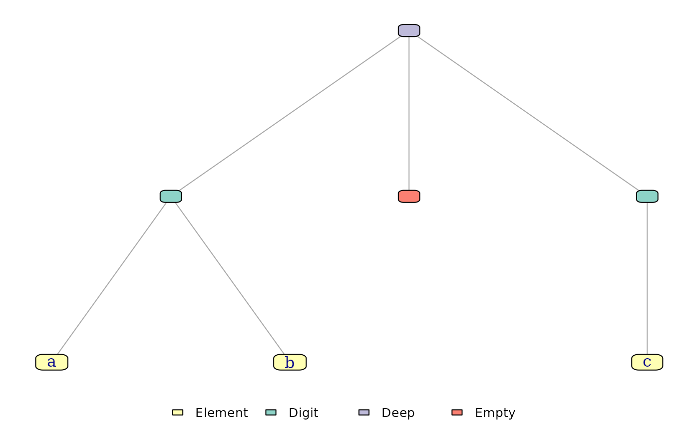

Plot a Sequence Tree
Usage
# S3 method for class 'flexseq'
plot(x, ...)Arguments
- x
A
flexseq(or subclass).- ...
Passed to the internal tree plotting routine. The most useful arguments are
vertex.size,edge.width,label_edges,title, andnode_label(see below). Remaining...is passed toigraph::plot.igraph.
Details
Visualizes the internal finger-tree structure, not a value-level chart.
Requires the igraph package to be installed (listed in Suggests).
node_label controls vertex labels. Presets:
"value"(default) — payload for elements, blank for structural nodes."type"— node class (Element,Digit,Deep,Node2,Node3,Single,Empty)."both"—typeandvalueon separate lines."none"— no labels.
Alternatively, node_label accepts a function function(node) returning a
single character string per vertex. The node list has fields:
id— internal graph vertex id (string).type— same values as the"type"preset.label— the default label (payload for elements,""for structural).measures— a named list of accumulated monoid values for the subtree rooted at this node. For structural nodes these are the cached values; for element leaves, each entry is the monoid'smeasure()applied to the leaf entry (so.sizeis 1, and any customsum-like monoid equals the leaf's own contribution). Keys are monoid names such as.size,.named_count, or any custom name added viaadd_monoids().element— for element nodes, the raw leaf entry. Shape depends on the structure type (seemeasure_monoid()for the entry contract).NULLfor structural nodes.
Measure values are exposed as-is, including list-valued measures (e.g. the
built-in .pq_min on priority_queue is list(has, priority)).
Examples
x <- flexseq("a", "b", "c")
if(requireNamespace("igraph", quietly = TRUE)) plot(x)

if (FALSE) { # \dontrun{
# Label every node with its subtree size (leaves contribute 1).
plot_structure(as_flexseq(1:10), node_label = function(node) {
paste0(node$type, "\n.size=", node$measures$.size)
})
# Custom monoid: sum of numeric payloads. Structural nodes show the
# subtree total; leaves show their own contribution.
sum_monoid <- measure_monoid(`+`, 0, function(el) el)
xs <- add_monoids(as_flexseq(c(3, 1, 4, 1, 5, 9, 2, 6)),
list(sum = sum_monoid))
plot_structure(xs, node_label = function(node) {
if(node$type == "Element") sprintf("%g\nΣ=%g", node$element, node$measures$sum)
else sprintf("%s\nΣ=%g", node$type, node$measures$sum)
})
# List-valued built-in measure: priority_queue's .pq_min tracks the min
# priority seen in a subtree as list(has, priority). Unpack in the label.
pq <- priority_queue("task-a", "task-b", "task-c",
priorities = c(5, 1, 3))
plot_structure(pq, node_label = function(node) {
m <- node$measures$.pq_min
if(node$type == "Element") {
sprintf("%s\np=%g", node$element$value, node$element$priority)
} else if(isTRUE(m$has)) {
sprintf("%s\nmin=%g", node$type, m$priority)
} else {
node$type
}
})
} # }